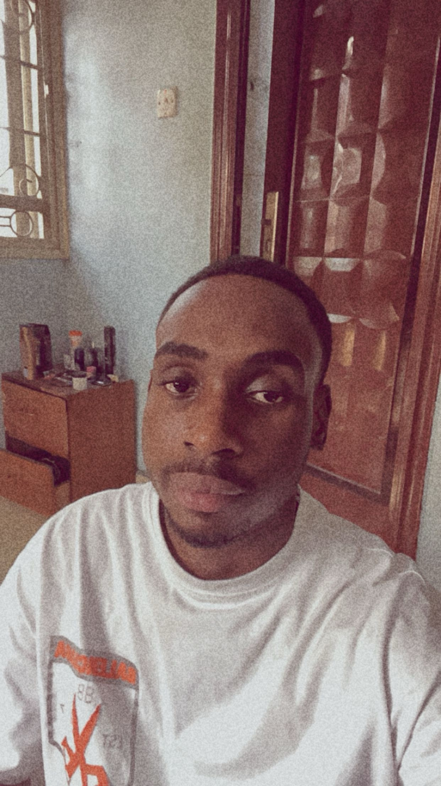

ABDULWAHAB HASSAN

Web Developer, Web Designer
OBJECTIVE:
Having spent my life in Tech Hub cummunity, I have used my time to bring visually aesthetic,respnsive, and accessible website to my community. After cutting my teeth at Spherical, I have a proven history of a strong ethics and passion for web design, Excited to pursue new companies to grow my skills while facilitating the empowermentand vocalization of merginalized communities.
WORK EXPERIENCE:
Web Developer-
Tech Hub - September 2022-- Curent
- Monitored, created and populated 100+ QA sheets with designer and project manager.
- Engaged in 100+ hours of wordpress training and PHP crash course with lead designer.
- Collaborated with designers and performance team on designing and updates to sites and blogs, improving users experience by 41%.
- Participated in stand-up 2 times a month. team leaders would review, assign and coach team members
EDUCATION:
B.Sc Compuer Science
Ignatius Aguru University
january 2022 - August 2026
Relevant courses
- Data Structures
- Data Managment System
- Software Design Methodology
- ARIA/AIIY Accessibility
- Responsive Desing
- OOP Web Development
SKILLS:
- JavaScript ⭐️⭐️⭐️
- HTML ⭐️⭐️⭐️⭐️
- CSS ⭐️⭐️⭐️⭐️⭐️
- Python ⭐️⭐️⭐️
- React.js ⭐️⭐️⭐️⭐️
- SQL ⭐️⭐️⭐️⭐️⭐️
- jQuery ⭐️⭐️
Contact Me
Hobbies
© Abdulwahab Hassan . All rights reserved.